Interactive visualization for genomic and other data.
Create custom plots and genome browsers for web applications and Python notebooks. Explore individual genomic regions or compare data across samples.
GenomeSpy uses a visualization grammar to bring variants, signals, sequences, and annotations together in views that share genomic coordinates. Embed a custom browser in a web application, build interactive plots in Python notebooks, or explore data in Observable.
Use GenomeSpy to explore questions in cancer genomics, gene regulation, and sequence-to-function analysis. Browse examples of structural variants, sequence alignments, scatter plots, and heatmaps, or compare sample collections in GenomeSpy App.
Try the viewer below. Zoom from a whole-genome overview down to individual bases and see how DNA sequence, gene annotations, GC content, and evolutionary conservation line up. GPU-accelerated rendering keeps zooming and panning smooth, even with large datasets.
GenomeSpy uses a declarative grammar: you describe the data, how it should be displayed, and how views fit together. The grammar builds on ideas from the Grammar of Graphics, ggplot2, and Vega-Lite, with features for genomic coordinates and data.
If you use IGV or the UCSC Genome Browser, the tracks above will look familiar. In GenomeSpy, you can design each track by choosing its marks, mapping data values to color or size, and layering marks in the same view. For example, draw arcs between structural variant breakpoints and align them with a track showing copy-number changes.
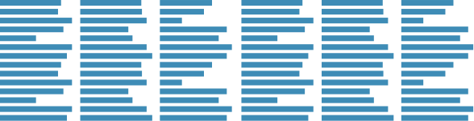
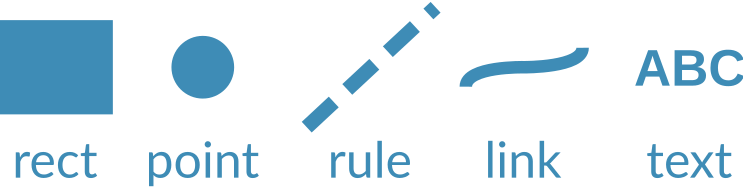
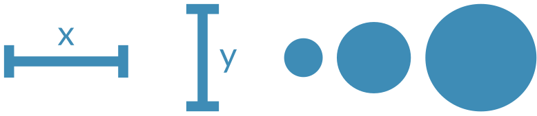
Embed a genome browser or interactive plot with the JavaScript API. Use GenomeSpy Core's declarative grammar to define custom views for your application.
Build charts from data frames with the Altair-like Python API. Explore gene expression heatmaps or scatter plots of single-cell embeddings in Jupyter or marimo.
Compare samples and group them by metadata in GenomeSpy App. Inspect somatic mutations and gene amplifications in tumors, or explore DNA methylation and histone ChIP-seq signals.
GenomeSpy App lets you explore genomic data from multiple samples together with sample metadata. It supports copy-number alterations, structural variants, mutations, DNA methylation, and signals from assays such as ATAC-seq and ChIP-seq. You can move from an overview of the sample collection to individual samples and genomic regions.
Samples can be filtered, grouped, and sorted using metadata or attributes derived from the genomic data—for example, copy number at a gene of interest. You can bookmark the resulting views and share them as URLs.
The App builds on GenomeSpy Core, so its views can be configured for different datasets and combinations of data types.
Exploring copy-number alterations and short variants in the DECIDER ovarian cancer cohort, from cohort-wide patterns to individual samples and genomic regions. See the GenomeSpy paper (Lavikka et al., 2024) for details and the accompanying interactive visualization.
An independent GenomeSpy demo exploring copy-number profiles, somatic variants, and gene expression in the Mouse Cancer Cell Line Atlas (MCCA). Data from Mueller et al. (2026), prepared using the MCCA dataset recipe.
Exploring DNA methylation patterns in 61 ENCODE samples alongside FUSE-defined methylation segments and regulatory annotations. See the FUSE paper (Holmström et al., 2026) and try the interactive visualization.
Exploring 256 histone ChIP-seq tracks from ENCODE's mouse fetal chromatin atlas in a single figwig file, with zooming to Hs6st1 and grouping and filtering by tissue and histone mark. Data from the ENCODE Consortium and Bing Ren laboratory (Gorkin et al., 2020), prepared using the dataset recipe.
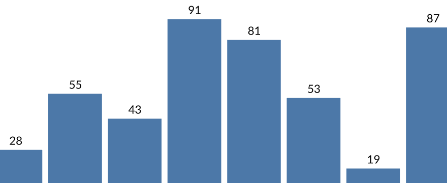
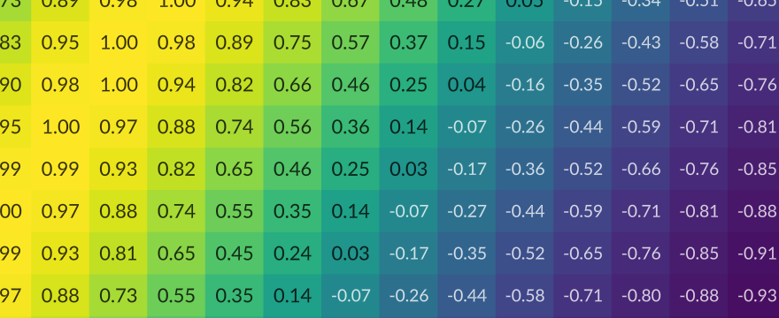
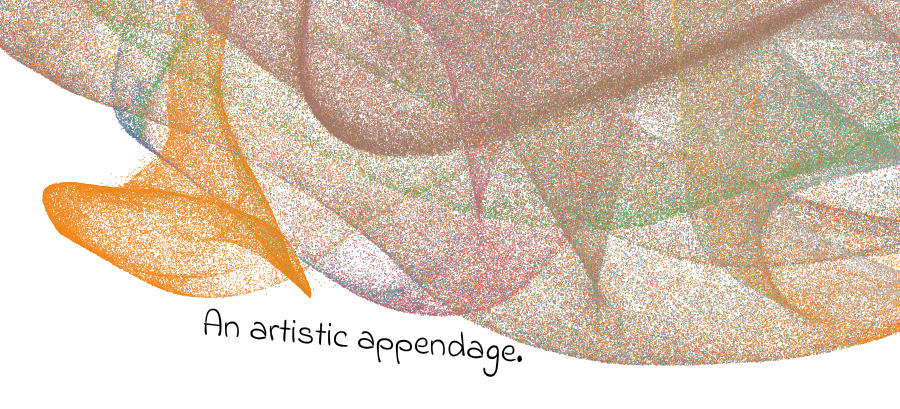
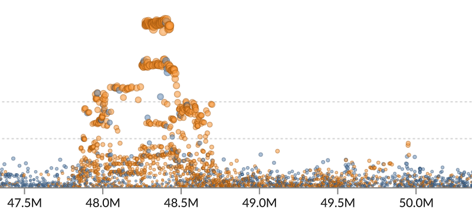
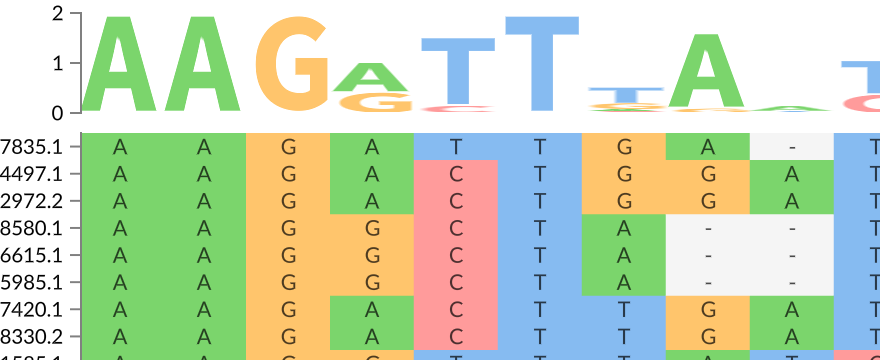
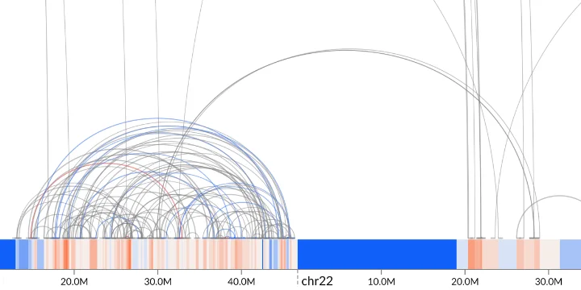
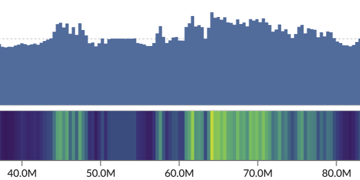
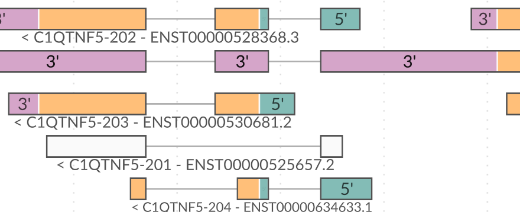
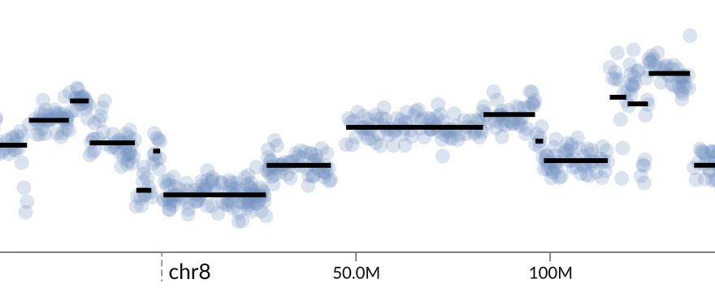
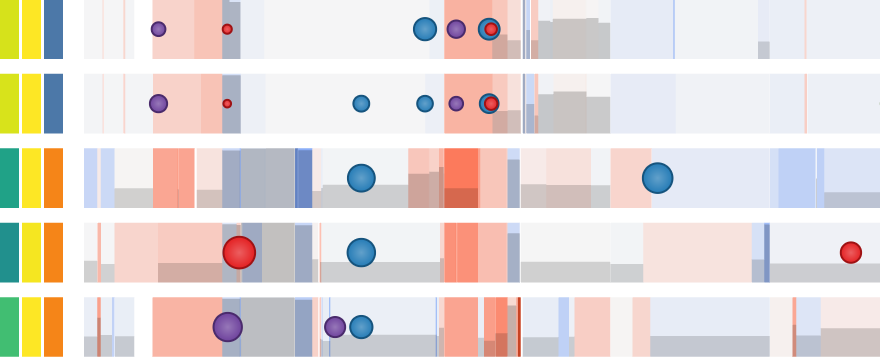
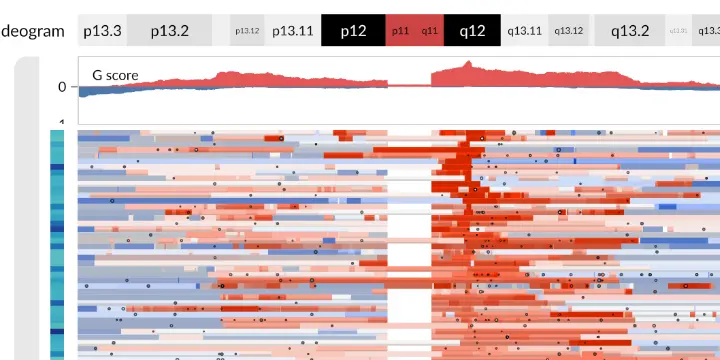
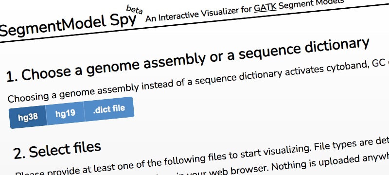
Copyright © 2018-2026 Kari Lavikka ( ), Oskari Lehtonen ( ), and contributors.
GenomeSpy was originally developed as Kari Lavikka's MSc thesis project in the Systems Biology of Drug Resistance in Cancer group at the University of Helsinki. Development continued during his doctoral research.
This project has received funding from the European Union's Horizon 2020 Research and Innovation Programme under Grant agreement No. 965193 (DECIDER) and No. 847912 (RESCUER), the Sigrid Jusélius Foundation, the Cancer Foundation Finland, and Orion Research Foundation.